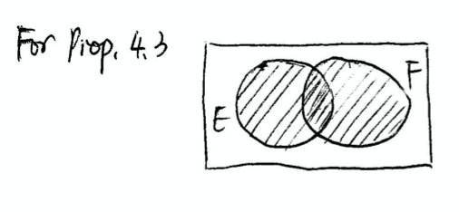
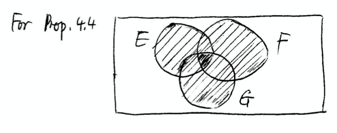

S - sample space: the set of all possible outcomes of an experiment
Event - Any subset E of the sample space is known as an event. That is, an event is a set of some possible outcomes.
If the outcome of the experiment is contained in E, then we say the E has occured
For E, obviously if (H, H) happens, we can say it happens that the first coin is head. This explains that if the outcome of the experiment is contained in E, then we can say the E has occured.
We can define E \cup F - the union of two events and E \cdot F = E \cap F - the intersection of two events E_1 \cup E_2 \dots E_n = \cup_{n=1}^{\infty}E_n E_1 \cap E_2 \dots E_n = \cap_{n=1}^{\infty}E_n
What if E-1 and E_2 have no common elements? E_1\cdot E_2 = 0
E^c = \{\text{all elements not in E}\} S^c = \phi
E \subset F implies that all elements in E are contained in F. It implies that if E occurs, we can say F occurs E \subset F \equiv F \supset E
Iff E \subset F and F \subset E then E = F
(\cup_{i=1}^nE_i)^c = (\cap_{i=1}^nE_i^c) (\cap_{i=1}^nE_i)^c = (\cup_{i=1}^nE_i^c)
Proof: Suppose \begin{aligned} x\;\; \epsilon&\;\; (\cup_{i=1}^nE_i)^c\\ \implies x \not\epsilon&\;\; (\cup_{i=1}^nE_i)\\ \implies x \not\epsilon&\;\; E_i, \text{ for any } i = 1,2,\dots n\\ \implies x\;\; \epsilon&\;\; E_i^c, \text{ for any } i = 1,2,\dots n\\ \implies x\;\; \epsilon&\;\; (\cap_{i=1}^nE_i^c)\\ Thus\;(\cup_{i=1}^nE_i)^c \subset&\;\; (\cap_{i=1}^nE_i^c) \end{aligned}
Similarly we can get (\cup_{i=1}^nE_i)^c \supset\;\; (\cap_{i=1}^nE_i^c)
Since the sets are now subset of each other, we can say that they are equal
S - sample space, E - event
0 \le P(E) \le 1 for any event E
P(S) = 1
For any sequence of mututally exclusive events E_1, E_2\dots (that is E_i\cdot E_j = 0 when i \ne j P(\cup_{i=1}^{\infty}E_i) = \sum_{i=1}^{\infty}P(E_i)
Proof: P(\cup_{i=1}^{\infty}E_i) = \sum_{i=1}^{\infty}P(E_i)
Let E_{n+1} = \phi, E_{n+2} = \phi
then
\cup_{i=1}^{\infty}E_i = \cup_{i=1}^{n}E_i,
P(E_{n+1}) = 0, P(E_{n+2}) = 0, \dots
Thus:
P(\cup_{i=1}^{n}E_i) = \sum_{i=1}^{n}P(E_i)
P(E^c) = 1 - P(E)
Proof:
E^c \cup E = S,\; E^c \cap E = \phi\\ \begin{aligned} P(S) &= P(E) + P(E^c)\\ P(E) + P(E^c) &= 1\\ P(E^c) &= 1 - P(E) \end{aligned}
If E^c \subset F, then P(E) \le P(F)
Proof: \begin{aligned} F &= E \cup (E^c F)\\ P(F) &= P(E) + P(E^cF)\\ P(E) &\le P(F) \\ \text{ Since } P(E^cF) &\ge 0 \end{aligned}
P(E\cup F) = P(E) + P(F) - P(EF) 
P(E\cup F \cup G) = P(E) + P(F) + P(G) - P(EF) - P(EG) - P(FG) - P(EFG) 
Think of P(E \cup F) and P(E \cup F \cup G) as the striped area respectively in the above two Venn diagrams. By calculating the areas of the two striped regions, we can get proposition 3 and 4
P(E_1 \cup E_2 \cup \dots E_n) = \sum_{i=1}^{n} - \sum_{i_1 < i_2}P(E_{i_1}E_{i_2}) + (-1)^{r+1}\sum_{i_1 < i_2 \dots < i_r}P(E_{i_1}E_{i_2}\dots E_{i_r}) \dots
\begin{aligned} S &= \{1, 2, \dots N\}\\ P(\{1\}) &= P(\{2\}) = \dots P(\{N\}) = \frac{1}{N}\\ \implies P(E) &= \frac{\text{number of outcomes in }E}{\text{total number of outcomes in }S} \end{aligned}